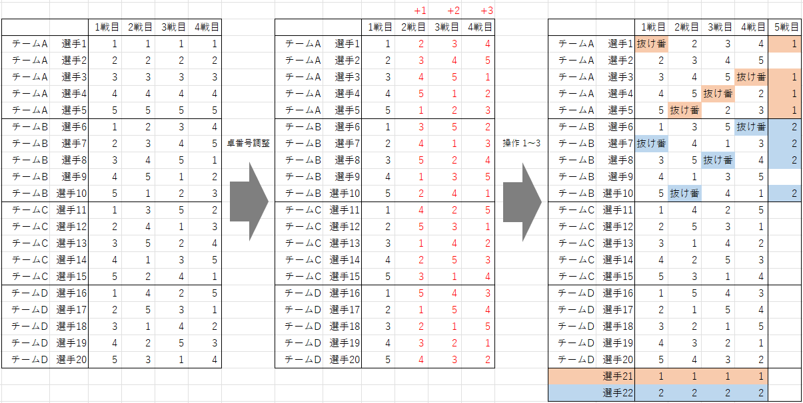
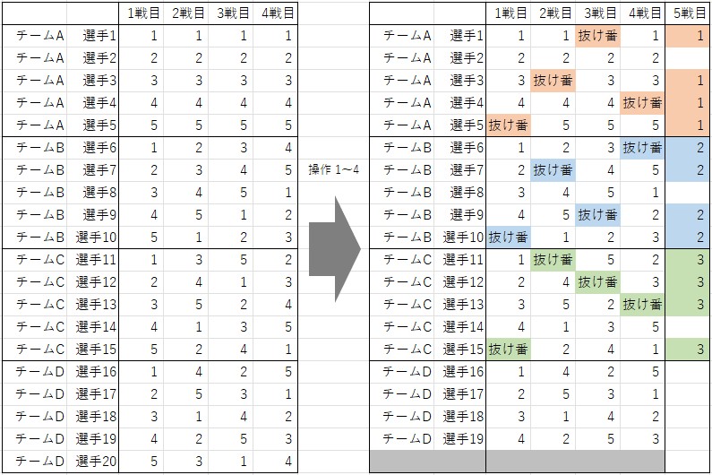

抜け番あり 1 人 4 戦 合計 5 戦 卓組作成方法
条件
- 4n + k (1 ≦ k ≦ 3) 人の選手がいる。(人数は 4 の倍数でなく、4 で割ると n 余り k である、という意味)
- 試合枠を 5 戦分設定する。
-
各選手は、そのうちの丁度 4 回に参加する。
- 最初の 4 戦は、それぞれについて、k 人が参加せず、その他の 4n 人が参加し、n 卓で行う。
- 最後の 1 戦は、不参加を経験した 4k 人が参加し、k 卓で行う。
- どの選手も、同じ相手と複数回同卓しない。
22 人 (n = 5, k = 2, 4n + k = 22) の例

方法
① 15 人 または 19 人以上 ((n, k) = (3, 3) または (n, k) = (4, 3) または n ≧ 5) の場合
k の値 (人数を 4 で割った余り) に応じて、以下の操作を行います。
k = 1 の場合
n 卓の 4 チーム戦の卓組を 4 戦分用意します。
その際、(どの選手も同じ相手と複数回同卓しないことは前提で、それに加え)
同じ卓を複数回使用する人がいないように、各対戦の卓番号を調整します。
4 チーム戦 卓組作成方法の ① で作ったものを使う場合は、全員の卓番号を、2 戦目は +1、3 戦目は +2、4 戦目は +3
とずらすことでうまくいきます。
② で作ったものを使う場合は、4 戦の抜き出し方や、各対戦の卓番号のずらす数をプログラムで全探索すると、うまく調整できます。
その後、以下の操作を行います。
- 4 チーム戦の卓組の末尾に 1 人を付け足す (これで合計が n 人になる)。全ての対戦に「卓番号 1」を記入する。
- 1 チーム目の全ての対戦の「卓番号 1」をすべて「抜け番」に書き換える。
- 卓組の右に 1 戦を付け足し、抜け番を経験した選手に「卓番号 1」を記入する。
下の画像は、21 人 (n = 5, k = 1) の場合の例です。
k = 2 の場合
n 卓の 4 チーム戦の卓組を 4 戦分用意し、同じ卓を複数回使用する人がいないように、各対戦の卓番号を調整するところまでは「k = 1
の場合」と同じです。
その後、以下の操作を行います。
-
4 チーム戦の卓組の末尾に 2 人を付け足す (これで合計が n 人になる)。
- 付け足した 1 人目の全ての対戦に「卓番号 1」を記入する。
- 付け足した 2 人目の全ての対戦に「卓番号 2」を記入する。
-
以下をすべて「抜け番」に書き換える。
- 1 チーム目の全ての対戦の「卓番号 1」
- 2 チーム目の全ての対戦の「卓番号 2」
-
卓組の右に 1 戦を付け足し、抜け番を経験した選手に、以下のように記入する。
- 1 チーム目の選手に「卓番号 1」を記入する。
- 2 チーム目の選手に「卓番号 2」を記入する。
下の画像は、22 人 (n = 5, k = 2) の場合の例です。

k = 3 の場合
n+1 卓の 4 チーム戦の卓組 (作りたい抜け番あり卓組より 1 人多いもの) を 4 戦分用意し (参考:
4 チーム戦 卓組作成方法)、以下の操作を行います。
- 末尾の選手の 1 戦目の卓番号を確認し、1 戦目のその番号すべて (4 か所) を「抜け番」に書き換える。
- 2 ～ 4 戦目も同様に行う。
- 末尾の選手を削除する。
-
卓組の右に 1 戦を付け足し、抜け番を経験した選手に、以下のように記入する。
- 1 チーム目の選手に「卓番号 1」を記入する。
- 2 チーム目の選手に「卓番号 2」を記入する。
- 3 チーム目の選手に「卓番号 3」を記入する。
- 1 ～ 4 戦目の卓番号に抜け (使われていない番号) がある場合は、ずらすことで調整する。
下の画像は、19 人 (n = 4, k = 3) の場合の例です。

② 18 人 ((n, k) = (4, 2)) の場合
プログラムによる全探索で作成しました。(後日追記します。)
ソースコード
GitHub で公開しています。
補足
-
当サイトに掲載している卓組は、上記の方法で作成した後に、以下の操作を複数回行っている場合があります。
- 卓番号の入れ替え (例: 1 戦目の卓番号 1 を 2 に、2 を 3 に、3 を 1 に全て書き換えている)
- 選手番号の入れ替え
- 対戦番号の入れ替え
- 今後、18 人の卓組の作成方法 (③)・ソースコード (Python) とその実行時間を掲載する予定です。
卓組一覧「抜け番あり 1 人 4 戦 合計 5 戦」へ戻る